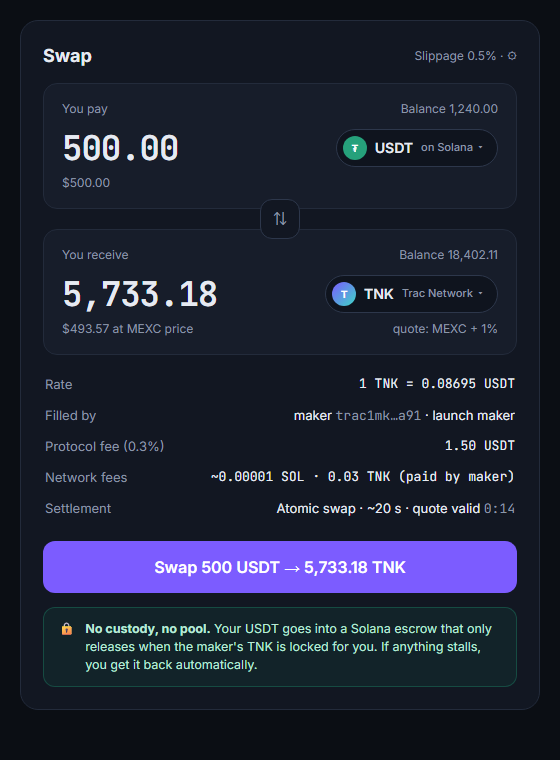

Swap TNK for USDC or USDT directly with another trader. No exchange account. Your funds never sit with us. Every swap either completes for both sides or refunds both.
See how it works
One market at launch: TNK, the native coin of Trac Network, against US dollar stablecoins on Solana.
You'll need a Trac wallet (for TNK) and a Solana wallet such as Phantom (for USDC/USDT).
Makers answer your request in milliseconds, priced close to the main exchanges.
Your dollars go into a Solana escrow that only code controls. The maker's TNK goes to an address neither of you can move alone.
The step that pays the maker unlocks your TNK. If anything stalls, you get your funds back.
No. Dollars are held by a public Solana program that pays out only by its rules, and TNK sits at an address that needs keys from both traders. Nobody at TracSwap can move either.
Every swap has a deadline. If it doesn't complete, you reclaim your funds yourself, and the other side gets theirs back too.
It's software you use from your own wallets. Access is blocked only from sanctioned regions. Check the rules where you live.
After testing on Solana devnet and a small-limit mainnet trial.